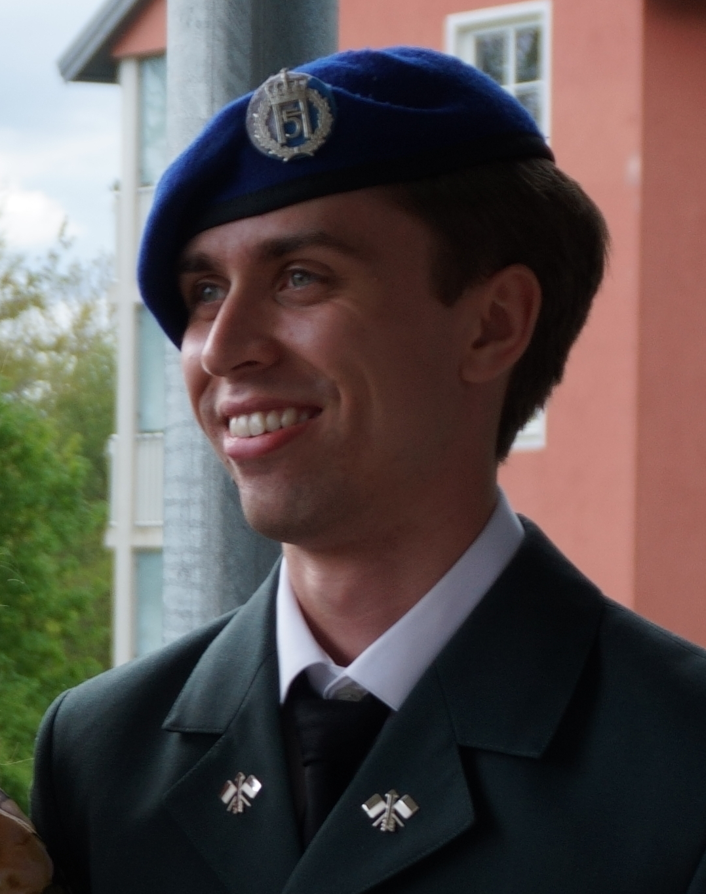

2023 — 2024
Early university credits & national competition
Completed university-level mathematics and programming during high school. Top 10 nationally in competitive programming, Norsk Informatikkolympiade.
Computer vision, control systems, and things that work under real constraints.

Selected Work
Sub-pixel burst photography pipeline. ECC global alignment followed by Lucas-Kanade residual flow — implementing a Google Research paper from scratch.
Reinforcement learning visualizer. Rewriting in FastAPI + React / TypeScript for a cleaner, deployable architecture.
Background
2023 — 2024
Early university credits & national competition
Completed university-level mathematics and programming during high school. Top 10 nationally in competitive programming, Norsk Informatikkolympiade.
2024 — 2025
Norwegian Army, Signal Battalion
Served as a conscript technical assistant. Received a full-time offer during service for a role typically requiring a year of further education — becoming possibly the youngest to hold the position at that time.
2025 — 2026
Full-time CIS technician & 50 university credits
Completed 50 credits at UiT concurrently with full-time work — machine learning, algorithms, OOP, databases. A- average. Part of teams doing cutting-edge development for the Army's CIS and communication capabilities.
2026 — 2027
Gap year
Still building. MFSR pipeline, Q-learning visualizer, and whatever comes next.
2027 →
NTNU — Robotics & Cybernetics
Incoming. Drawn to estimation, feedback, and control under uncertainty.
Contact
Open to research collaborations, internships, and interesting problems.